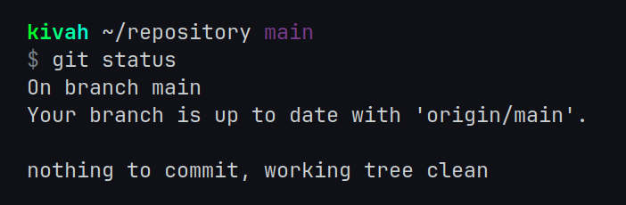
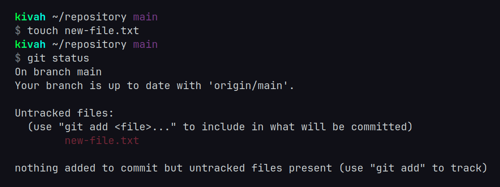
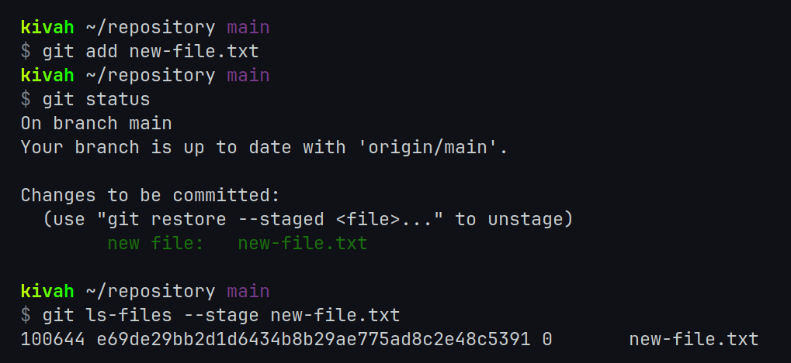
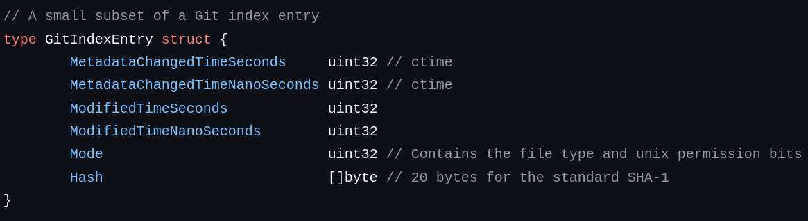

Implementing
"git status"
If your choice of version control is Git, you likely use git status every day.
You might even have a short shell alias like gs, or use an IDE with colorful filenames showing you which files have been changed without ever manually typing the command.
In this article, I will explain the details of how git status works, and how I implemented it for my file manager, fen.
When you first clone a repository, git status will tell you "nothing to commit, working tree clean".

The "working tree" is all the files in your local repository, and since you haven't made any changes yet, it is clean. Boring!
Let's add a new file called new-file.txt

So, how does Git know we just created a file?
Well, when we cloned this repository, Git created a flat list of all the filenames and put it inside a file called .git/index.
Now that we've created a new file, this list is out of sync with the working tree!
From here on, I will refer to the .git/index file as "the Git index".
When a file is not in the Git index, it is "untracked", as git status just told us.
To track this file, Git tells us to use "git add"

Viola! Our file is tracked. It is now in the Git index, which we can check with the git ls-files --stage new-file.txt command.
Looking closely at the output, we can tell there's some additional metadata stored about each file in the Git index.
The first 3 digits in 100644 is the octal representation of the 4-bit "object type", with 100 (octal) signifying a regular file.
These 3 octal digits actually contain 7 bits of data, with the lower 3 bits currently unused. Here's some Python showing the 4-bit "object type" from these three octal digits. bin(0o100 >> 3) == '0b1000'
The next 3 digits 644 are the octal unix permission bits of this file. Regular files like this can only have 2 possible values here, 755 or 644.
It also stores a SHA-1 hash, more on that later.
Implementation
Here's the metadata I need in my implementation of git status. The filename is not shown in this struct, since it is stored in a map key.
Have you ever noticed when renaming a file, git status shows you both the old and new filenames?
When a file is not in the .git/index, it is "untracked".
When a file is in the working tree, but not in .git/index, it is "unstaged" and deleted.
- Silly incremental path name reading implemented before knowing of 12-bit size header turning out to be useful
- The unique way objects are hashed (null-byte thing)
- Optimization
- Testing (having to zip repositories)
- Windows backslash path challenges
Integrating into fen
- Unexpected new requirements (context cancellation, map lookup)
- Concurrency (and when to re-run git status)
- Testing on large repositories (chromium, linux, kubernetes) requiring adding a "running git status..." status message
- A note on kernel filesystem caching
- Limit of 15 repositories
- Optimizing the color lookup
- Updating on Git commands
While writing this article, I discovered and fixed 1 bug in gogitstatus and 1 bug in fen which required adding another unexpected required function to gogitstatus - chmod bug - addition of ExcludingDeleted(): deleted files were being highlighted (only slipped through because of IncludingDirectories)